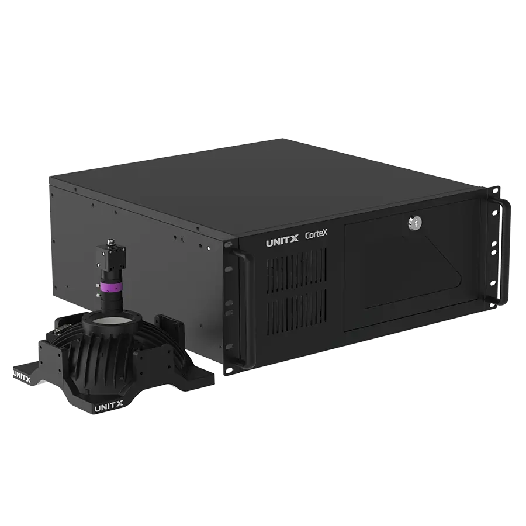
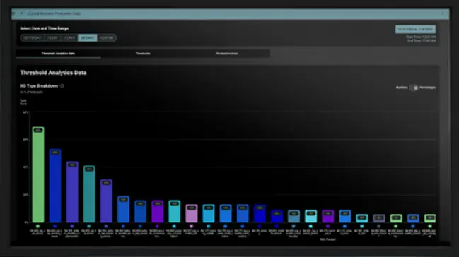

How it works
Cameras
A software-defined lighting system that dynamically illuminates parts for maximum contrast imaging. Capture the best image with versatile lighting. Illuminate and image random complex defects across variable materials and structures.
The Brain

Manage AI model development through the four core functional centers: AI model labeling, AI training, threshold tuning, and production line data. Use an intuitive, drag-and-drop interface to develop AI models. As few as 5 images are needed to train AI models. High resolution image support, up to 50MP.
AI / Training

Sample Efficient AI. Rapidly teach models with as few as 5 images per defect type. Adjustable Tolerances. Pixel precise defect segmentation and adjustable tolerance. Accurate for defects that are complex and variable in shape, size, location, and presentation, automatically normalizing for position variability.